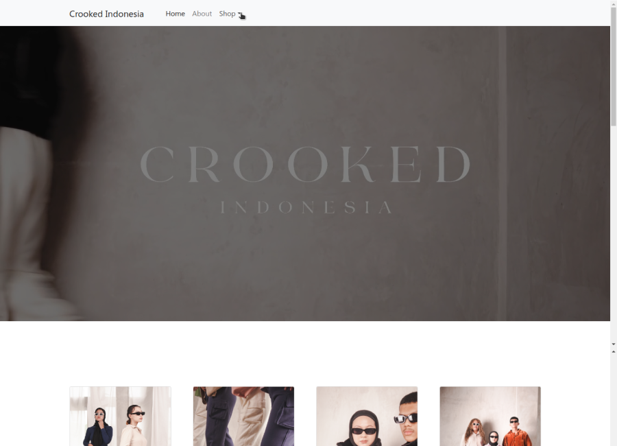
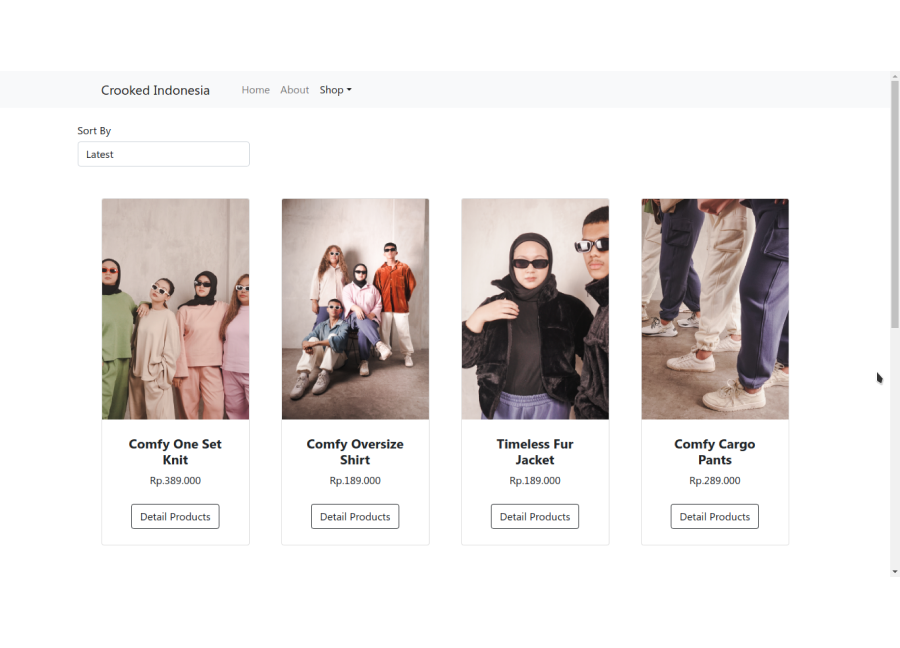

[ PROJECT_FILE: CROOKED ]
CLIENT: CROOKED INDONESIA | ROLE: WEB DEVELOPER
STATUS: [ CONNECTION_LOST / ARCHIVED ]

> ARCHIVE_DESCRIPTION
>> SUBJECT: Katalog Online untuk Brand Fashion Lokal "Crooked Indonesia".
>> FUNCTION: Etalase digital untuk menampilkan koleksi produk secara informatif. Mendukung manajemen stok dinamis dan filtering produk.
[ ! ] SYSTEM_ALERT: SERVER_OFFLINE
>> CATATAN: Entitas bisnis telah berhenti beroperasi.
>> Tautan di bawah hanya mengarah ke repositori kode sumber (Source Code).
> OPERATION_LOGS
[ DURATION: 6 MONTHS // 2022 ]
-
>> BACKEND_OPS:
Mengelola logika server dan arsitektur database untuk manajemen produk yang efisien. -
>> FRONTEND_INTEGRATION:
Menghubungkan API/Data backend ke antarmuka pengguna bersama tim frontend. -
>> SYSTEM_MAINTENANCE:
Memastikan stabilitas server selama masa kontrak aktif.
> VISUAL_RECORDS
[IMG_01]: CATALOG_VIEW
[IMG_02]: PRODUCT_DETAIL